Sólo que el calor en la ciudad era peor.

Más sucio.
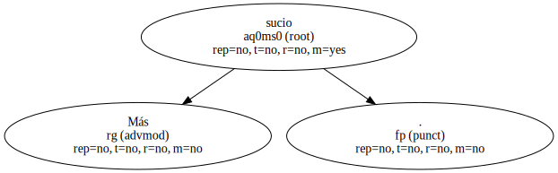Señor , señor.
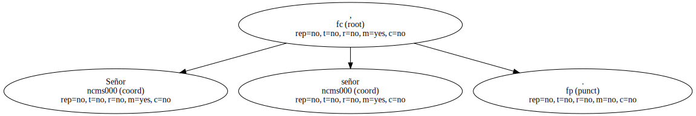Suspiró y se abrió un poco de piernas , porque con los primeros calores llegaban también , como siempre , las escoceduras : los muslos le rebosaban por encima del encierro de las medias y formaban dos lorzas blancas que se empeñaban en entrechocar y estorbarse mutuamente.
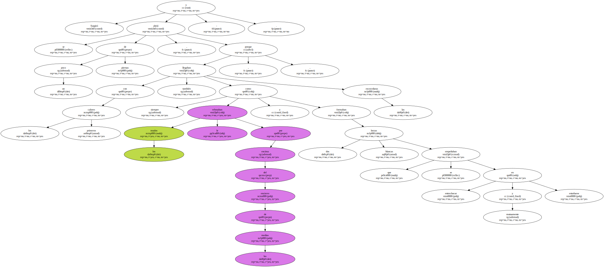- - Esto me pasa por estar tan gorda.
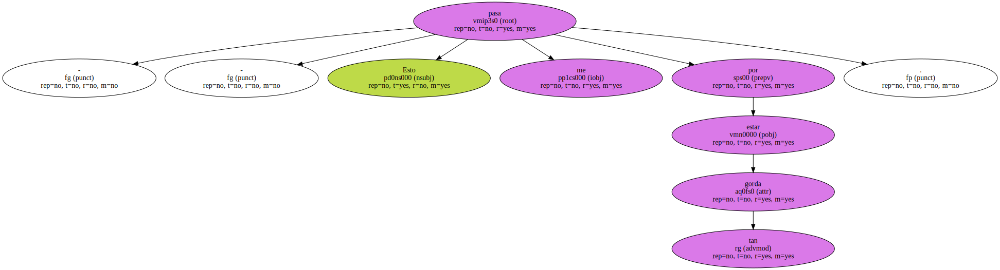Antonia acababa de fregar los platos de la comida.
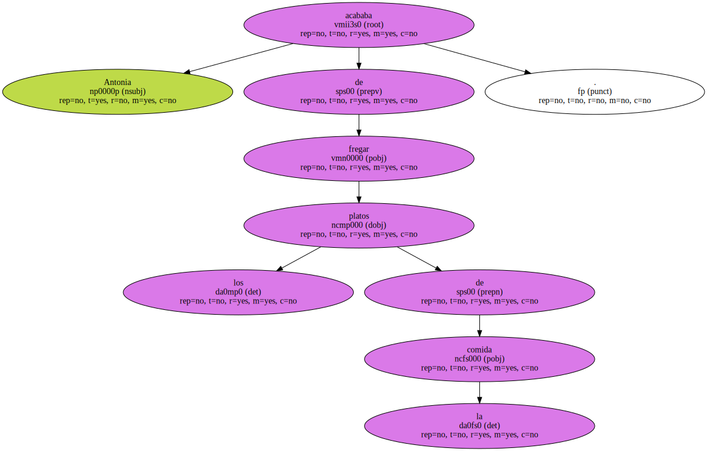Antonio no había venido y ella sola ensuciaba siempre poco , así es que acabó en un santiamén.
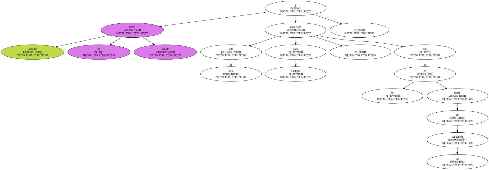Después , por hacer algo , sacó todas las sartenes del armario y durante unos minutos se entretuvo en frotarlas con estropajo y denodado celo ; Antonio no le permitía hacerlo , decía que las sartenes no se lavan , sino que se restriegan con papel de periódico para que queden engrasadas , - no ves , tonta , que si les das con el estropajo luego se te pega todo.
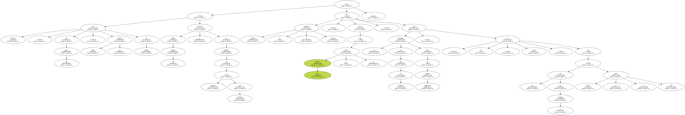Ella le obedecía , aunque no sabía de dónde había sacado su hermano eso de que así no se pegaban , porque jamás le había visto friendo nada.
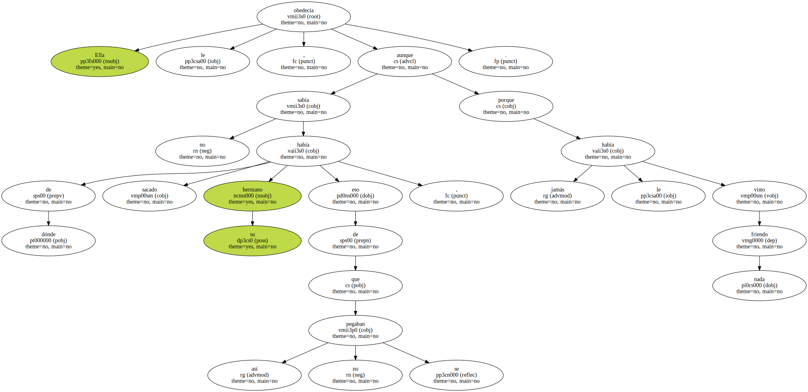Pero como a Antonia le repugnaba un poco dejar las sartenes aceitosas , de vez en cuando se permitía una brizna de rebeldía fraternal y las frotaba y refrotaba bien con detergente hasta hacer saltar las ronchas de frituras.
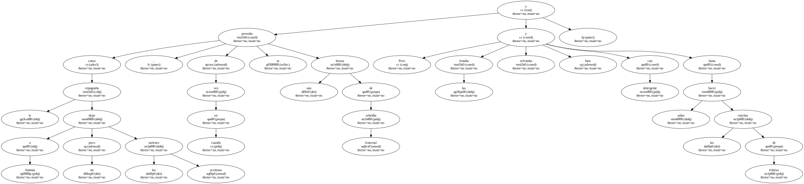A fin de cuentas la que cocinaba era ella , qué caramba.
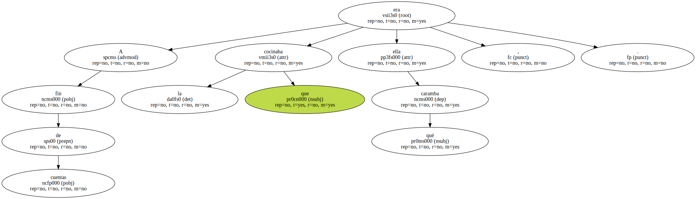- - Es la misma manía que tenía padre.
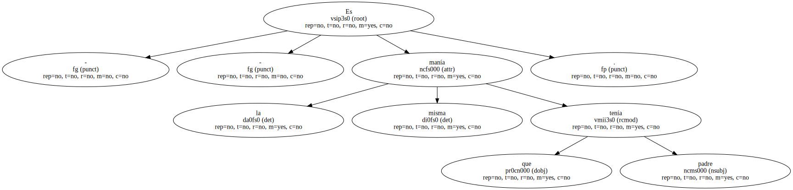